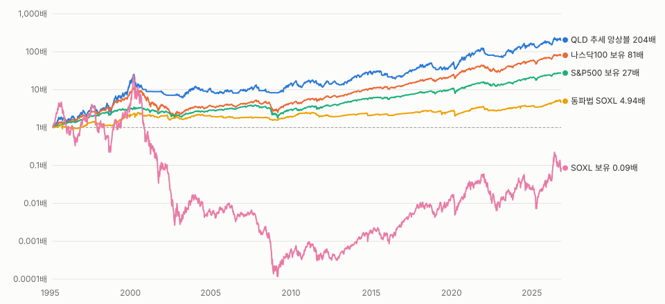

동파법을 계속 써도 되나요?
쓸 수는 있지만 주력으로는 권하지 않습니다. 세후 연 5.0%로 S&P500 보유(10.2%)의 절반입니다.
자세히 보기
최대 낙폭은 -37%로 작은 편입니다. 쓴다면 앱 동파법 탭의 다음 장 LOC/MOC 주문표를 장 마감 전에 그대로 넣어야 백테스트와 같은 체결이 됩니다.
핵심 요약
사전에 정한 4개 기준을 모두 통과한 전략은 나스닥100 2배(QLD) 추세 앙상블 하나였다. 1995~2026 세후 연 18.0%, 최대 낙폭 -77%.
살아남지만(최대 낙폭 -37%) 세후 연 5.0%로 S&P500 보유(10.2%)보다 낮다. 주력에서 뺀다.
닷컴 붕괴가 들어간 1995~2010 구간에서 -99%~-100% 낙폭. 3배 반도체는 어떤 규칙으로도 생존 기준을 넘지 못했다.
QLD 추세 앙상블 50% + S&P500 지수 ETF 50%. 세후 연 15.8%, 최대 낙폭 -62%.
LOC 체결가·총자산 계산·미래 데이터·연도별 리셋·단위 오기로 4월 수치는 무효. docs/archive로 옮겼다.
QLD 앙상블 세후 연복리
18.0%
1995-03 ~ 2026-10
최대 낙폭
-77%
2000-03 → 2003-03, 2014-07 회복
50/50 세후 연복리
15.8%
S&P500과 반반, 매년 리밸런싱
동파법 세후 연복리
5.0%
최대 낙폭 -37%, 고친 엔진 기준
01
2010년 이후만 보면 SOXL 보유가 압도적이지만, 닷컴 붕괴를 포함하면 -100%다. 두 구간 모두 버틴 것은 QLD 추세 규칙뿐이다.
| 전략 | 전체 CAGR | 전체 MDD | 1995~2010 CAGR | 2010~ CAGR | 2010~ MDD |
|---|---|---|---|---|---|
| QLD 앙상블 (^NDX, 나스닥 2배) | 18.0% | -76.6% | 19.7% | 17.0% | -44.7% |
| QLD 추세 (^NDX > SMA200, 나스닥 2배) | 18.1% | -77.5% | 19.6% | 17.3% | -48.3% |
| S&P500 보유 (SPY) | 10.2% | -55.2% | 7.7% | 14.1% | -33.7% |
| 나스닥100 보유 (QQQ) | 14.0% | -83.0% | 10.7% | 18.8% | -35.1% |
| 반도체 1배 보유 (SOXX) | 14.8% | -85.3% | 6.8% | 24.4% | -45.8% |
| SOXL 보유 | -7.5% | -100.0% | -39.3% | 35.4% | -90.5% |
| 동파법 v3.1 (RSI 자동, 10분할) | 5.0% | -36.9% | 4.6% | 5.7% | -30.3% |
| 하이브리드 ★최종 (RSI+SMA50→B&H / 동파) | -6.1% | -99.3% | -23.3% | 13.3% | -65.0% |
| SOXL 추세 (^SOX > SMA200) | 6.0% | -99.8% | -5.3% | 18.7% | -88.3% |

02
1차 후보는 모두 탈락했고, 결과를 보기 전에 선언한 2차 후보(추세 앙상블) 중 QLD만 통과했다.
2차 후보는 1차 결과를 본 뒤 추가했다. 다중 검정 위험이 있어 보수적으로 해석한다.
| 전략 | ① 생존 | ② 수익 | ③ 표본 외 | ④ 견고성 |
|---|---|---|---|---|
| 동파법 v3.1 (RSI 자동, 10분할) | ✅ | ❌ | ❌ | - |
| 하이브리드 ★최종 (RSI+SMA50→B&H / 동파) | ❌ | ❌ | ❌ | - |
| 하이브리드, 동파 대신 현금 (대조군) | ❌ | ❌ | ❌ | - |
| SOXL 추세 (^SOX > SMA200) | ❌ | ❌ | ❌ | - |
| USD 추세 (^SOX > SMA200, 반도체 2배) | ❌ | ❌ | ❌ | - |
| QLD 추세 (^NDX > SMA200, 나스닥 2배) | ✅ | ✅ | ✅ | ❌ |
| TQQQ 추세 (^NDX > SMA200, 나스닥 3배) | ❌ | ✅ | ❌ | - |
| SSO 추세 (^GSPC > SMA200, S&P 2배) | ✅ | ❌ | ✅ | - |
| UPRO 추세 (^GSPC > SMA200, S&P 3배) | ✅ | ✅ | ✅ | ❌ |
| SOXL 앙상블 (^SOX, SMA100~300) | ❌ | ❌ | ❌ | - |
| USD 앙상블 (^SOX, 반도체 2배) | ❌ | ❌ | ❌ | - |
| QLD 앙상블 (^NDX, 나스닥 2배) | ✅ | ✅ | ✅ | ✅ |
| TQQQ 앙상블 (^NDX, 나스닥 3배) | ❌ | ✅ | ❌ | - |
| SSO 앙상블 (^GSPC, S&P 2배) | ✅ | ❌ | ✅ | - |
| UPRO 앙상블 (^GSPC, S&P 3배) | ✅ | ❌ | ✅ | - |
03
가장 큰 원인은 LOC 매도 체결가였다. 동파법 2010~2026 세전 누적이 -57%에서 +240%로 바뀌었다.
| 문제 | 영향 |
|---|---|
| LOC 매도를 지정가로 체결 | 실제는 종가 체결. 동파법 수익을 크게 낮게 계산 |
| 매매한 날 총자산 계산 오류 | 매도분 중복·매수분 누락. 4186일 중 1353일 틀림, 최대 +56%. 독립 리뷰에서 발견 |
| 연도별 초기화 후 곱셈 누적 | 이어서 운용한 결과와 다름 |
| 주간 RSI 모드를 같은 주 종가로 적용 | 미래 데이터. 교란 1000건 중 658건에서 당일 종가가 모드를 바꿈 |
| 가격 소수 둘째 자리 반올림 | 2010~2016 SOXL($1 미만) 452일의 수익률 왜곡 |
| '+1.49억%' 표기 | 실제 약 +1,490만%. 단위 10배 오기 |
| 승률·EV에서 손절 제외 | 손절이 있어도 승률 100%로 표시 (앱 수정) |
| 2010년 이후 데이터만 사용 | 반도체 강세장만 봄. 닷컴·금융위기 미포함 |
04
QLD 앙상블도 닷컴 붕괴에서 -71%였고, 고점 회복까지 14년이 걸렸다. 견딜 수 있는 비중만 넣는다.
최대 낙폭
-77%
2000-03 → 2003-03
회복
2014-07
QQQ 보유는 2015-02
1986~1995 연복리
4.6%
나스닥 1배 보유 14.3%
1986~1995처럼 급락·반등이 반복되는 장에서는 늦게 팔고 늦게 사서 단순 보유보다 크게 뒤처졌다.
| 폭락 구간 | QLD 앙상블 | 나스닥100 보유 | S&P500 보유 | SOXL 보유 |
|---|---|---|---|---|
| 닷컴 붕괴 2000-03~2002-10 | -71.0% | -82.5% | -42.3% | -100.0% |
| 금융위기 2007-10~2009-03 | -35.3% | -51.6% | -55.2% | -97.7% |
| 코로나 2020-02~03 | -36.1% | -27.9% | -33.7% | -78.6% |
| 2022 하락 01~10 | -33.4% | -34.8% | -24.3% | -90.4% |
05
50%에서 위험 대비 수익(Sharpe 0.71)이 거의 최대이고, S&P500만 들 때보다 연 4.8%p 높다.
06
동파법은 900개 조합 중 두 구간 모두 QLD 추세 전략을 이긴 조합이 0개였다. 추세 전략은 이동평균 구성을 바꿔도 비슷하고, 결과를 바꾸는 건 레버리지 배수뿐이다.
| 항목 | 2010~ (A) | 1995~2010 (B) |
|---|---|---|
| S&P500 보유 | 12.6% | 6.6% |
| QLD 추세 앙상블 | 16.7% | 18.9% |
| SOXL 동파법 최고 조합 (사후 선택) | 37.7% | 8.6% |
| 그 A 1위 조합을 B에 적용 | — | -15.2% (낙폭 -99.8%) |
| 추세 전략 QQQ / QLD / TQQQ | 약 10% / 17% / 22% | 약 12% / 19% / 23% |
07
오픈소스 백테스트 엔진 vectorbt로 같은 전략을 재현했고, 4개 구간 모두 세전 연복리 차이가 0.001%p 이내였다.
| 구간 | 우리 엔진 | vectorbt |
|---|---|---|
| 2007~2026 | 20.241% | 20.241% |
| 2010~2026 | 20.612% | 20.612% |
| 2007~2012 | 8.601% | 8.602% |
| 2018~2023 | 24.519% | 24.517% |
08
TQQQ + 변동성 필터가 4개 기준을 모두 통과했다. 수수료 0.09% 기준 세후 연 20.6%, 최대 낙폭 -61%. 대신 -30% 이상 하락이 40년간 16번 왔다. 채택은 결정 대기.
3차 탐색이라 앞 단계 결과보다 우연일 가능성이 높다. 앞서 보고한 '①+② 연 16.4%'는 SGOV 매매 비용과 이자 세금을 빠뜨린 값이었다(정정: 15.8%).
| 방법 | 수수료 0.09% | 수수료 0.25% | 최악 낙폭 | -30% 이상 하락 (40년) |
|---|---|---|---|---|
| QLD 기본 (현재 앱) | 17.6% | 16.2% | -77% | 10번 |
| QLD + 변동성 필터 | 15.0% | 13.7% | -46% | 8번 |
| TQQQ 기본 | 22.5% | 21.0% | -90% | 19번 |
| TQQQ + 변동성 필터 | 20.6% | 19.2% | -61% | 16번 |
| S&P500 보유 | 10.2% | — | -55% | 4번 |
09
메인 화면이 레거시 엔진 오류로 열리지 않던 문제를 없애고, 추천 전략 신호와 동파법 다음 장 주문표를 같은 계산 코드로 보여준다.
매매 기록 저장·조회는 실제 DB로 확인하지 못했다. 4월에 홈랩 PostgreSQL로 옮겨져 있어 이 맥에서는 연결되지 않는다(테스트는 모의 DB로 통과).
앱과 같은 코드로 1995~2026을 이어서 운용했고, 상장 전 구간은 실제 ETF에 맞춘 합성 시계열을 썼다.
| 항목 | 가정 |
|---|---|
| 데이터 | 야후 일봉. 지수 가격지수, ETF 배당 포함 수정주가 |
| 상장 전 | 지수 × 배수 일일 합성, 실제 ETF와 겹치는 구간에서 drag 보정. 일간 상관 SOXL 0.996, QLD 0.996 |
| 체결 | t일 종가 신호 → t+1일 종가. 동파법 LOC는 전일 정보로 주문, 당일 종가 체결 |
| 비용 | 편도 0.047% (0.25%도 확인) |
| 세금 | 양도세 22%, 연 실현이익, 이월공제 없음, 마지막 날 청산. 기본공제 미반영 |
| 현금 | 이자 0% (단기국채 반영 시 +0.6%p) |
bun scripts/research/run.ts --refresh 로 전체를 다시 돌리면 docs/validation/results.md 가 갱신된다.
Q & A
쓸 수는 있지만 주력으로는 권하지 않습니다. 세후 연 5.0%로 S&P500 보유(10.2%)의 절반입니다.
최대 낙폭은 -37%로 작은 편입니다. 쓴다면 앱 동파법 탭의 다음 장 LOC/MOC 주문표를 장 마감 전에 그대로 넣어야 백테스트와 같은 체결이 됩니다.
아닙니다. 900개 조합을 시험했지만 2010년 이후와 1995~2010 두 구간 모두에서 추세 전략보다 나은 조합은 없었습니다.
최근 데이터로 고른 최고 조합(연 37.7%)은 닷컴 구간에서 -15.2%/년, 낙폭 -99.8%였습니다. 숫자를 최근에 맞추면 폭락장에서 더 위험해집니다.
그 15년은 반도체 역사상 가장 좋은 구간입니다. 닷컴 붕괴를 넣으면 SOXL 보유는 -100%, 200일선 추세 규칙도 -99%였습니다.
3배 레버리지는 변동성이 클 때 일일 리밸런싱 손실이 커져, 하락장 반등 구간에서도 회복하지 못합니다.
목표 비중은 20%p 단위로 연평균 약 30일 바뀝니다. 그대로인 날은 매매하지 않습니다. 주 1회만 맞춰도 세후 연 17.2%로 비슷했습니다.
해외주식 양도세 22%(연 250만원 공제)를 매년 냅니다. 백테스트 수치는 이미 세후이며, 공제는 반영하지 않았습니다.
bun scripts/research/run.ts --refresh 를 실행하면 최신 데이터로 같은 기준을 다시 판정합니다. 1년에 한 번 권합니다.
과거 기준으로는 연 3%p쯤 더 벌고 최악 낙폭도 작았습니다(-77% → -61%). 대신 -30% 이상 하락이 평균 2.5년마다 왔고, 기간의 3분의 2는 고점보다 20% 이상 낮은 상태였습니다. 이걸 견디고 규칙대로 계속할 수 있을 때만 의미가 있습니다.